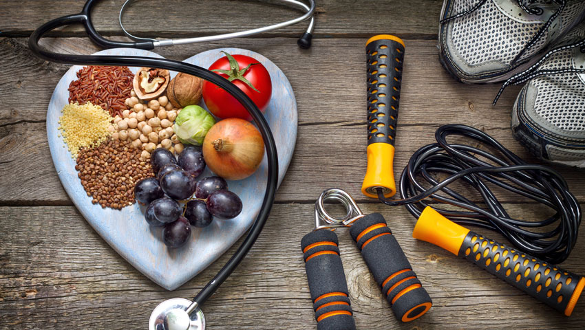

SPORCU NASIL BESLENMELİ?

Sporcunun en önemli yakıtı, besin!
Peki, sporcular için en doğru besinleri biliyor musunuz?
Günlük ortalama 1500 kalori alınmalı
Günlük alınması gereken kalori miktarı kişiden kişiye ve yapılan spora göre değişse de ortalama 1500 kalori gerekli olan enerjiyi sağlayacaktır. Eğer amaç fit bir vücuda sahip olmaksa günlük alınan 1500’lük kalorinin yapılacak egzersizle 1000 kalorisini yakmak kas kütlesinin korunmasını sağlayacaktır. Giden yağlardan gideceği gibi vücut daha sağlıklı bir görünüme kavuşacaktır.
Artan sıvı ihtiyacı karşılanmalı
Spor yaparken çok daha fazla sıvı kaybı yaşanır. Özellikle de yüksek tempolu antrenmanlarda ter yoluyla vücuttan çok miktarda sıvı çıkışı olur. Bunu geri kazandırmanın en sağlıklı yolu bol bol su içmektir. Giden sıvıyı yerine koymadıkça vücudun kaybı sadece sıvı değil, kas kütlesi de olacaktır. Günde 8- 15 bardak ( 1.5- 3 litre) su tüketimi idealdir. Ancak ağır egzersiz ve sıcak havalarda ihtiyaca göre daha fazla su içmelidir.
Kilo başına 1.6 gram protein
Spor yapanların çok iyi bir kural vardır; kas kütlesinin korunması için protein olmazsa olmazdır. Çünkü proteinler sporcuların yüksek performans göstermesi için oldukça güçlü bir kaynaktır. Kas kütlesini korumanın yanı sıra aynı zamanda onarma görevi görür. Ancak sporcuların unutmaması gereken bir diğer kural ise, asıl önemli olanın çok fazla protein almak değil sağlıklı ve yağsız hayvansal protein tüketmektir. Bunun ölçüsü kilo başına 1.6 gram protein olacak şekilde ayarlanabilir
Sporcunun itici gücü; karbonhidrat
Karbonhidratların en önemli görevi, egzersiz boyunca kan şekeri seviyesini korumak ve enerji sağlamaktır. Vücuttaki kas dokularının korunması, yağ dokularının azalması ve vücudun enerji ihtiyacını karşılayabilmek içinse kilo başına 2-2.5 gram kadar karbonhidrat içeren bir rutin oluşturulmalıdır. Ayrıca spor sonrasında da karbonhidrat alımı devam etmelidir. Çünkü alınan karbonhidrat, egzersiz esnasında kullanılan glikojen depolarını tekrar doldurur. Proteinlerde olduğu gibi karbonhidrat alımında da sağlıklı olanlar tercih edilmelidir. Bunlar; tahıllar, nişastalı sebzeler, meyve, süt vb.
Yağlarla araya mesafe koyulmalı
Sağlıklı bir kas yapısı ve daha az yağ dokusu için beslenme listesindeki yağlar azaltılmalıdır. Bunun için kilo başına 0.5 gram yani 4-5 yemek kaşığı yağ almak yeterli olacaktır. Yağlar; tekli doymamış yağ asidi olan zeytinyağı, avokado ve badem gibi besinlerden alınmalıdır.
SPORDAN ÖNCE NASIL BESLENİLMELİ?
- Spor yapmadan 3-4 saat öncesinde bir ana öğün tüketilmeli.
- Spordan en az 1 saat önce bir ara öğün tercih edilmeli. (Meyve, yoğurt vb.)
- Spor öncesinde ısıya bağlı sıvı kaybı sonucu oluşabilecek problemleri önlemek için yaklaşık 500- 550 ml su içilmeli.
SPORDAN SONRA NASIL BESLENİLMELİ?
- Spor sonrası dokuların onarılması için ve depoların tekrar dolması için protein alınmalı.
- Kas glikojeninin sentezini uyarmak için yeterli kompleks karbonhidrat tüketilmeli. Karbonhidrat oranı 3’te 1 olabilir.
- Egzersiz sonrası 3 saat içinde elzem amino asit, kaliteli protein içeren et, süt, yumurta gibi yiyecekler , kas protein sentezini arttırır.
- Spor öncesi olduğu gibi sonrasında da sıvı alımı oldukça önemlidir. Her 20 dakikada bir 200 ml su içilebilir.
|